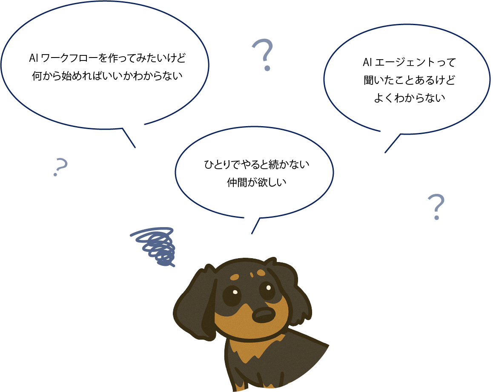
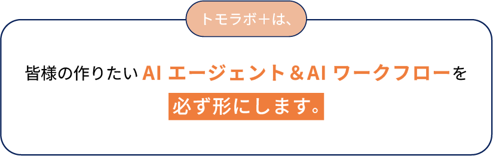
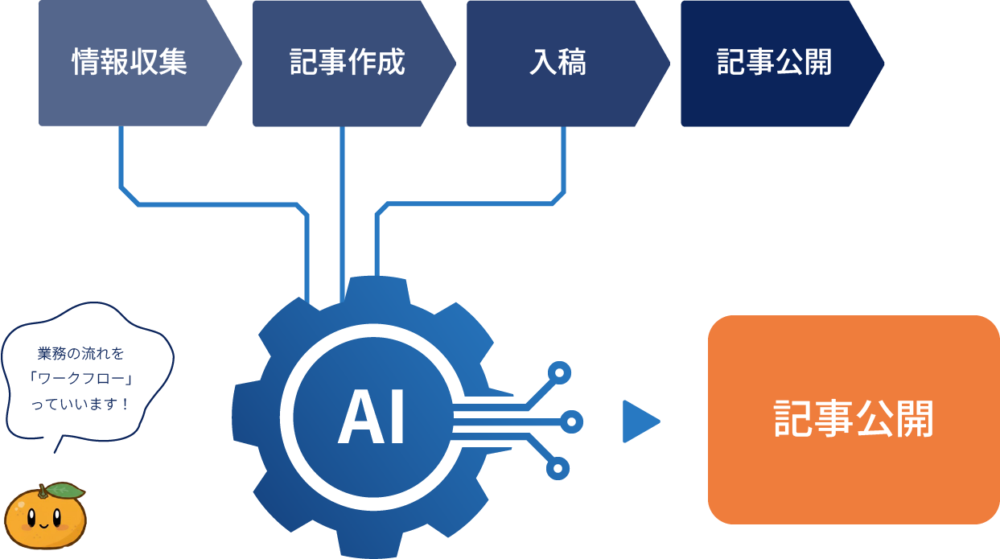
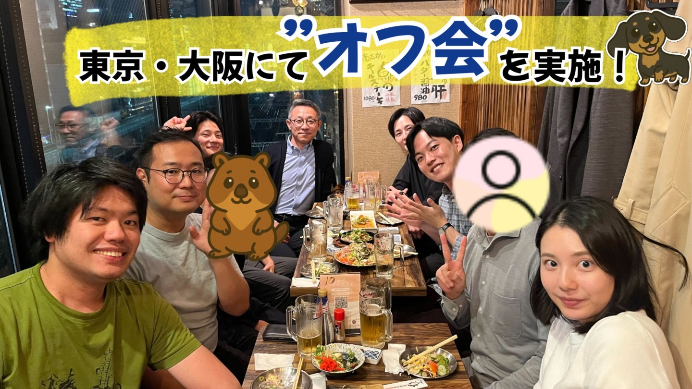
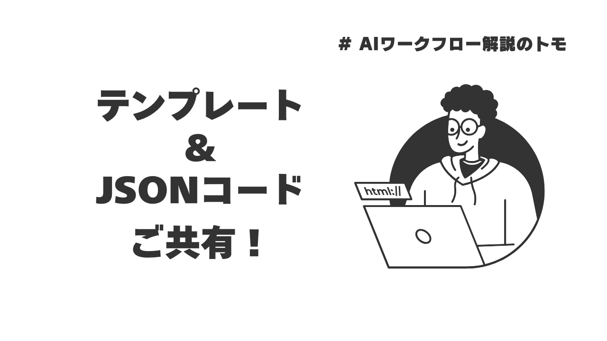
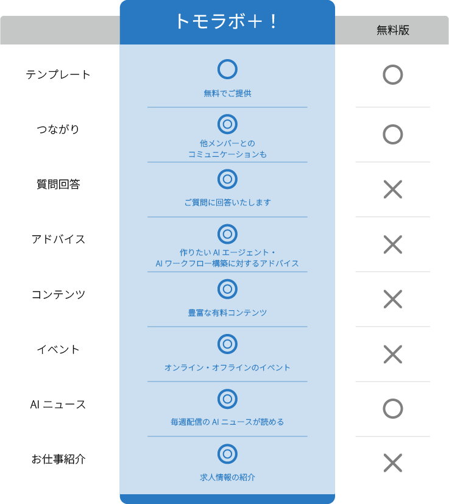
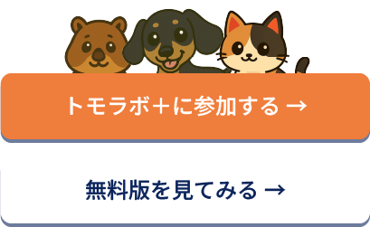

作りたいAIワークフローを必ず形に
・エラー時はトモ＆メンバーが即サポート
・AI構築のロードマップで「何から始めよう？」を解決
・豊富なワークフロー事例から業務改善のアイデアが得られる
通称、「トモラボ！」と呼ばれる本コミュニティは、
AIエージェント・ワークフロー構築に特化した日本有数のコミュニティです！

そんなあなたにぴったりなのが 「トモラボ＋」！

仕事の流れを一部/全部AIで自動化したフローのことです。

・エラー時はトモ＆メンバーが即サポート
・AI構築のロードマップで「何から始めよう？」を解決
・豊富なワークフロー事例から業務改善のアイデアが得られる
・ここでしか見られない10時間超の動画教材
・コピペで動くJSONコードを多数共有
・毎週のAIニュース＋毎月新コンテンツを継続配信
・AIツール専門家へのインタビュー動画
・作ったAIを投稿すると仲間から改善フィードバック
・案件相談やコラボが生まれ、副業・キャリアのチャンスにも
・メンバー同士での仕事やコラボが生まれた実績あり
・各業界で活躍する、AI感度の高いメンバーが多数参加
・四半期ごとにオフ会(東京・大阪)を多数開催
・オンラインで「トモのAI勉強会」を定期開催
・最新AI知識＆実践スキルをコミュニティと一緒に習得
入会申し込み
トモラボでは、AIワークフロー・エージェントに特化した
様々な学習コンテンツを用意しています
AIワークフロー特化のコンテンツが数十時間分！
メンバーや専門家に「最新AIツール」を解説いただく大人気企画

トモやメンバーさんが作った過去のAIシステムが一覧化。作りたいAIがきっと見つかる
毎週AIの進化を”最速×定量データ”でキャッチできるニュースまとめを発信！

大阪＆東京での開催実績あり！みんなでAIワークフローを勉強しましょう

AIシステムを構築可能なJSONコードを公開しています！
AIワークフロー解説のトモは
AIワークフロー・エージェント領域に強みがあります！
しげのりさん
テクテクさん
あまねさん
あっきーさん
みやひろさん
リョウさん
けんまるさん
ゆうさん


トモラボは「作る」「学ぶ」「仲間とつながる」が全てそろったAIコミュニティです。
あなたも今日から一緒に、「トモラボ」でやりたいことを形にしてみませんか？
入会を申し込む
無料版はこちら
AIエージェントやAIを使った自動化ワークフローを解説しているトモです！
週2本（火曜・金曜）、AIエージェント・AIワークフローに関する動画を投稿します。
「AIによって、仕事の成果を上げたい！」「AIによって、夢を達成したい！」
少しでもそう思う方は、一緒にAIを勉強していきましょう！
YouTubeチャンネル「AIワークフロー解説のトモ」を運営。
慶應義塾大学卒業後、大手コンサルティングファームにて、DX戦略立案及びAI導入に参画。
「生成AI関連の技術調査」を名目に、同社シリコンバレーオフィスやマイアミオフィスへ短期の調査留学を経験。
トビタテ留学ジャパン日本代表 11期として、カナダのヨーク大学に留学。最近行けていないが、趣味は阿波踊り。